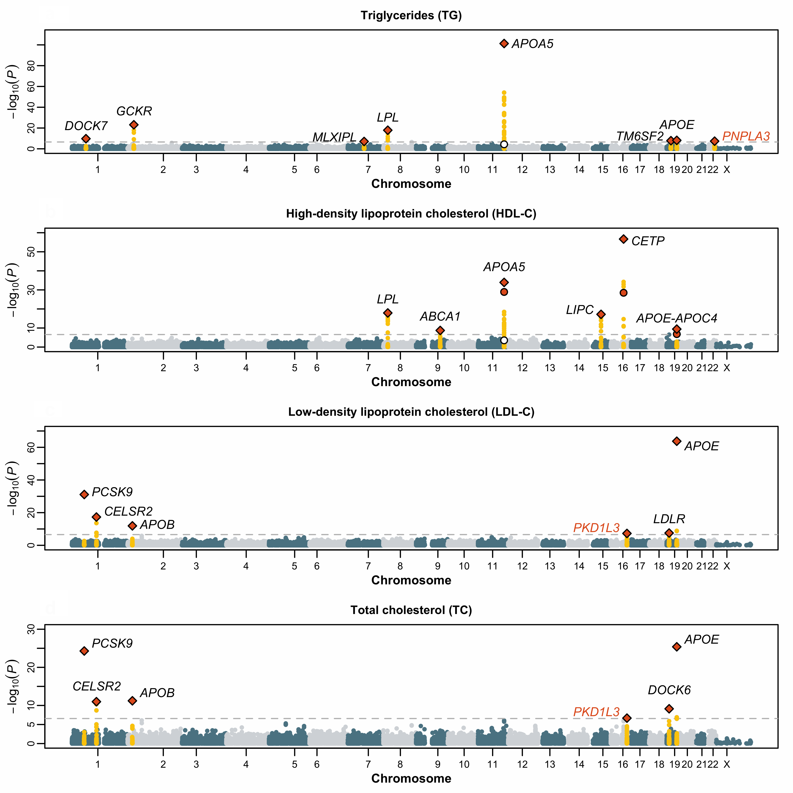
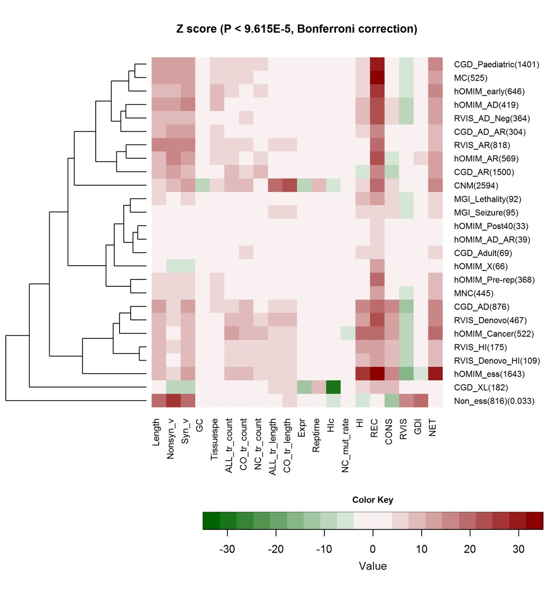

Principal Investigators
Prof. Pak Chung Sham 沈伯松
Suen Chi-Sun Professorship in Clinical Science
Chair Professor in Psychiatric Genomics
Director, Centre for Genomic Sciences
Director of Academic Developments, Department of Psychiatry
BA (Cantab), BM BCh (Oxon), MSc (Lond), PhD (Cantab), MRPsych
Email: pcsh@am@hnoku.com.hk
GWAS NGS RNA Imaging Phenotype Stats
- Research interests
- Genetics and epidemiology of psychiatric disorders
- Statistical methodology for genetic and epidemiological studies
- Personal websites
HKU Scholars Hub Page
Departmental Page
 Google Scholar Page
Google Scholar Page ORCID
ORCID
- Publications
- Full up-to-date publication list at ResearchGate
- Other interests
- Game theory
Dr. Clara Sze-man Tang 鄧詩敏
Assistant Professor, Department of Surgery
Email: clar@atang@hnoku.com.hk
GWAS NGS
- Research interests
- WES & WGS study of rare diseases
- Genetic basis of Hirschsprung disease
- Genetic factors associated with congenital heart disorder
- Personal websites
- ORCID
Research
We build statistical and computational methods for human genetics — from biobank-scale association studies to rare-disease sequencing — and apply them to advance our understanding of complex traits, psychiatric disorders, and congenital diseases.
Complex Traits & Psychiatric Genomics
- Biobank-scale genome-wide association studies and trans-ancestry meta-analysis to map the genetic architecture of psychiatric and complex disorders.
- Polygenic risk scoring, statistical fine-mapping, and heritability partitioning to translate associations into actionable risk estimates and biological insight.
- Mendelian randomization and integrative analyses linking genetic variants to molecular, brain-imaging, and clinical phenotypes.

Rare Diseases & Sequencing
- Whole-exome and whole-genome sequencing to discover de novo variants and pinpoint causal genes in congenital and rare disorders.
- A focus on conditions with elevated incidence in East Asian populations, including Hirschsprung disease and congenital heart defects.
- Joint analysis of rare and common variation, family-based statistics, and trio designs to uncover disease mechanisms.

Functional Genomics & Multi-Omics
- Bulk and single-cell transcriptomics to characterise disease-relevant tissues and cell types.
- Integrative analysis of gene expression with GWAS signals — including transcriptome-wide association studies (TWAS) and colocalization — to nominate causal genes.
- Methods for regulatory network inference and multi-omics integration across the transcriptome, epigenome, and proteome.
Methods, Software & Open Science
- Developing scalable statistical methodology for human genetics and releasing open-source software used by the broader community.
- Cross-ancestry and multi-population approaches that aim to make polygenic prediction more equitable across diverse cohorts.
- Reproducible, well-documented pipelines for biobank-scale data — from quality control to downstream interpretation.
News & Highlights
National-level talent recognition
Prof. Pak Sham has been selected as a national-level talent under the Ministry of Science and Technology Torch Programme (a designation comparable to the Changjiang Scholar honour).
Associate Editor of GENETICS
Prof. Sham has joined GENETICS, the flagship journal of the Genetics Society of America, as an Associate Editor — further to his tenure as Editor-in-Chief of Human Heredity (2017–2023).
Top 20 Chinese scientist in medicine
Listed for three consecutive years among the top 20 Chinese scientists in medicine worldwide by research.com, recognising sustained impact in psychiatric genomics and statistical genetics.
Software & Tools
Open-source methods developed in the lab or supervised by Prof. Pak Sham.
PLINK
The de-facto standard toolset for whole-genome association and population-based linkage analyses. Co-developed by Shaun Purcell during his PhD in the lab, with over 30,000 citations.
Purcell et al., AJHG (2007)
lassosum
One of the earliest polygenic-score methods based on penalised regression directly on GWAS summary statistics — a foundational approach for modern PRS.
Mak et al., Genet Epidemiol (2017)
Genetic Power Calculator
A widely used tool for the design of linkage and association mapping studies of complex traits, providing power calculations under flexible study designs.
Purcell, Cherny & Sham, Bioinformatics (2003)
GATES
A rapid and powerful gene-based association test for GWAS, using an extended Simes procedure to combine SNP-level evidence within each gene.
Li et al., AJHG (2011)
HYST
A hybrid set-based test for GWAS that combines complementary tests to detect associations at the gene-set and pathway level.
Li, Kwan & Sham, AJHG (2012)
KGGSeq
A comprehensive framework for prioritising variants from whole-exome and whole-genome sequencing studies of Mendelian and complex diseases.
Li et al., Nucleic Acids Res (2012)
Selected Publications
Highlights from a corpus of more than 800 papers cited over 168,000 times (H-index 158, i10-index 774). See Prof. Sham's Google Scholar profile for a complete list.
Recent work (2022 – present)
- Chen LG, … Sham PC (2024). Mendelian randomization: causal inference leveraging genetic data. Psychological Medicine 54: 1461–1474.
- Warren TL, … Sham PC, Nord AS (2023). Association of neurotransmitter pathway polygenic risk with specific symptom profiles in psychosis. Molecular Psychiatry.
- Liu Z, … Sham PC (2023). Reciprocal causation mixture model for robust Mendelian randomization analysis using genome-scale summary data. Nature Communications 14: 1131.
- Tubbs JD, Sham PC (2023). Preliminary evidence for genetic nurture on depression and neuroticism through polygenic scores. JAMA Psychiatry 80: 832–841.
- Lee CC, … Sham PC (2023). Third-generation genome sequencing implicates medium-sized structural variants in chronic schizophrenia. Frontiers in Neuroscience 16: 1058359.
- Trubetskoy V, … Sham PC, … (2022). Mapping genomic loci implicates genes and synaptic biology in schizophrenia. Nature. (PGC3 SCZ, >2,800 citations)
- Lu X, … Sham PC, … (2022). A polygenic risk score improves risk stratification of coronary artery disease: a large-scale prospective Chinese cohort study. European Heart Journal.
- Blokland GAM, … Sham PC, … (2022). Sex-dependent shared and nonshared genetic architecture across mood and psychotic disorders. Biological Psychiatry.
- Guan F, Ni T, … Tubbs J, Sham PC, Gui H (2022). Integrative omics of schizophrenia: from genetic determinants to clinical classification and risk prediction. Molecular Psychiatry.
- Li GHY, … Sham PC (2022). Evaluation of bidirectional causal association between depression and cardiovascular disease. Psychological Medicine 52: 1765–1776.
Methodology & software
- Mak TSH, … Sham PC (2017). Polygenic scores via penalized regression on summary statistics. Genetic Epidemiology 41: 469–480. (lassosum)
- Sham PC, Purcell SM (2014). Statistical power and significance testing in large-scale genetic studies. Nature Reviews Genetics 15: 335–346.
- Li MX, Kwan JSH, Sham PC (2012). HYST: a hybrid set-based test for genome-wide association studies. American Journal of Human Genetics 91(3): 478–488.
- Li MX, Gui HS, Kwan JSH, Sham PC (2011). GATES: a rapid and powerful gene-based association test using extended Simes procedure. American Journal of Human Genetics 88(3): 283–293.
- So HC, Sham PC (2010). A unifying framework for evaluating the predictive power of genetic variants. PLoS Genetics 6: e1001230.
- Purcell S, … Sham PC (2007). PLINK: a tool set for whole-genome association and population-based linkage analyses. American Journal of Human Genetics 81: 559–575. (>39,000 citations)
- Neale BM, Sham PC (2004). The future of association studies: gene-based analysis and replication. American Journal of Human Genetics 75: 353–362.
- Purcell S, Cherny SS, Sham PC (2003). Genetic Power Calculator: design of linkage and association genetic mapping studies of complex traits. Bioinformatics 19: 149–150.
- Sham PC, Purcell S (2001). Equivalence between Haseman-Elston and variance-components linkage analyses for sib pairs. American Journal of Human Genetics 68: 1527–1532.
- Curtis D, Sham PC (1995). Model-free linkage analysis using likelihoods. American Journal of Human Genetics 57: 703–716.
Psychiatric genomics & consortium work
- Toulopoulou T, … Sham PC, Weinberger DR (2019). Polygenic risk score increases schizophrenia liability through cognition-relevant pathways. Brain 142(2): 471–485.
- Lee PH, … Sham PC, … (2019). Genomic relationships, novel loci, and pleiotropic mechanisms across eight psychiatric disorders. Cell.
- Wang Q, … Sham PC, … Li T (2018). Effect of damaging rare mutations in synapse-related gene sets on response to short-term antipsychotic medication. JAMA Psychiatry.
- So HC, … Sham PC (2017). Analysis of genome-wide association data highlights candidates for drug repositioning in psychiatry. Nature Neuroscience.
- Lu X, … Sham PC, Willer C (2017). Exome chip meta-analysis identifies novel loci and East Asian-specific coding variants associated with serum lipids. Nature Genetics 49: 1722–1730.
- Schizophrenia Working Group of the Psychiatric Genomics Consortium (2014). Biological insights from 108 schizophrenia-associated genetic loci. Nature 511: 421–427.
- Tang CS, … Sham PC, Gao W (2014). Exome-wide association analysis reveals novel coding sequence variants associated with lipid traits in Chinese. Nature Communications 6: 10206.
- St Clair D, … Sham PC, He L (2005). Rates of adult schizophrenia following prenatal exposure to the Chinese famine of 1959–1961. JAMA.
- McGuffin P, … Sham PC, Cardno A (2003). The heritability of bipolar affective disorder and the genetic relationship to unipolar depression. Archives of General Psychiatry 60: 497–502.
- Sham PC, … Murray RM (1992). Schizophrenia following prenatal exposure to influenza epidemics between 1939 and 1960. British Journal of Psychiatry 160: 461–466.